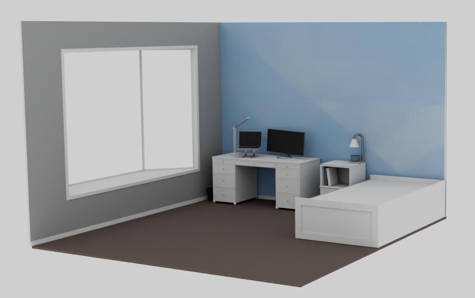
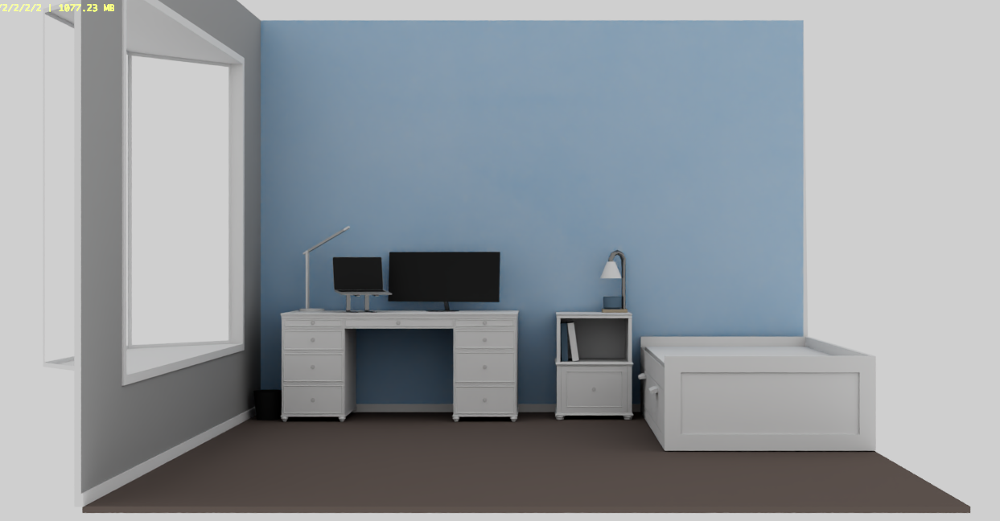
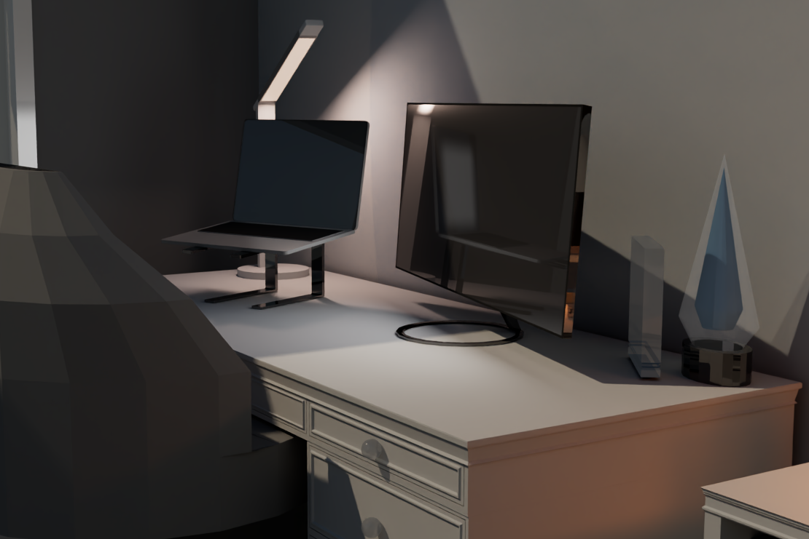
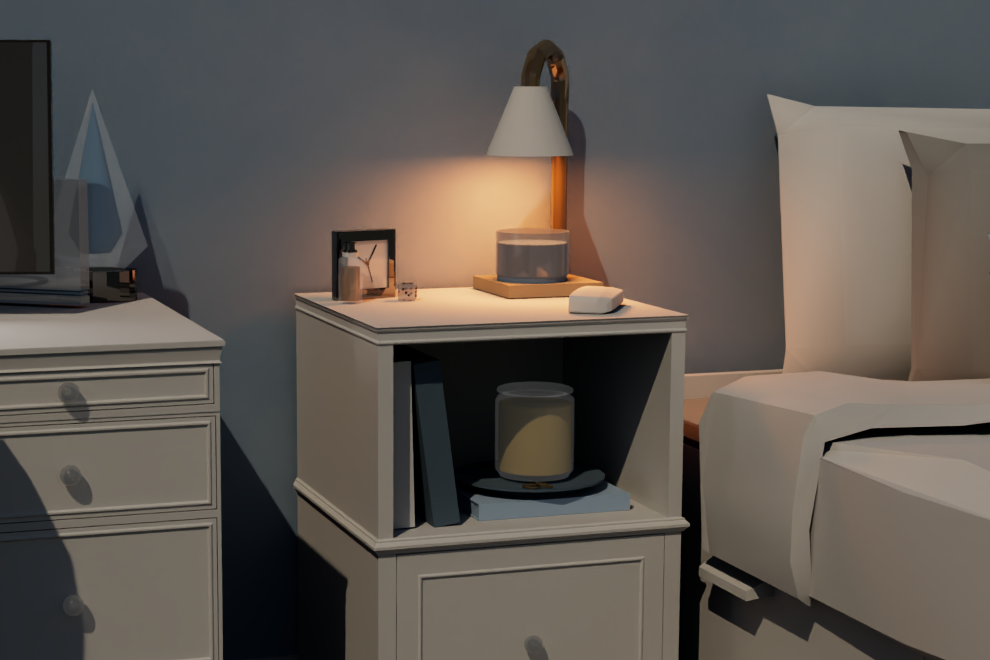
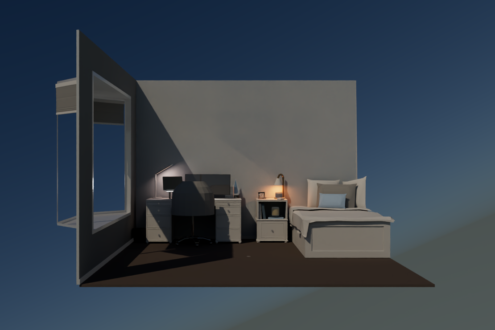
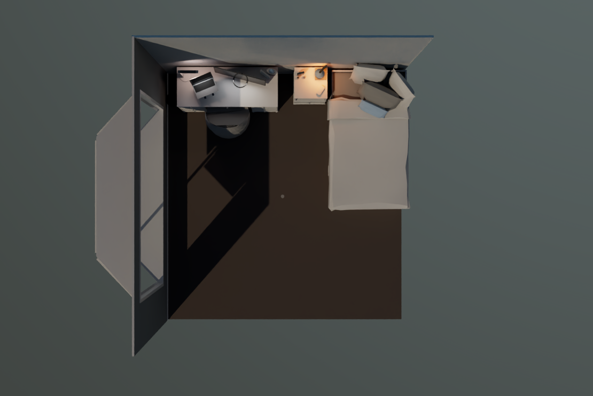
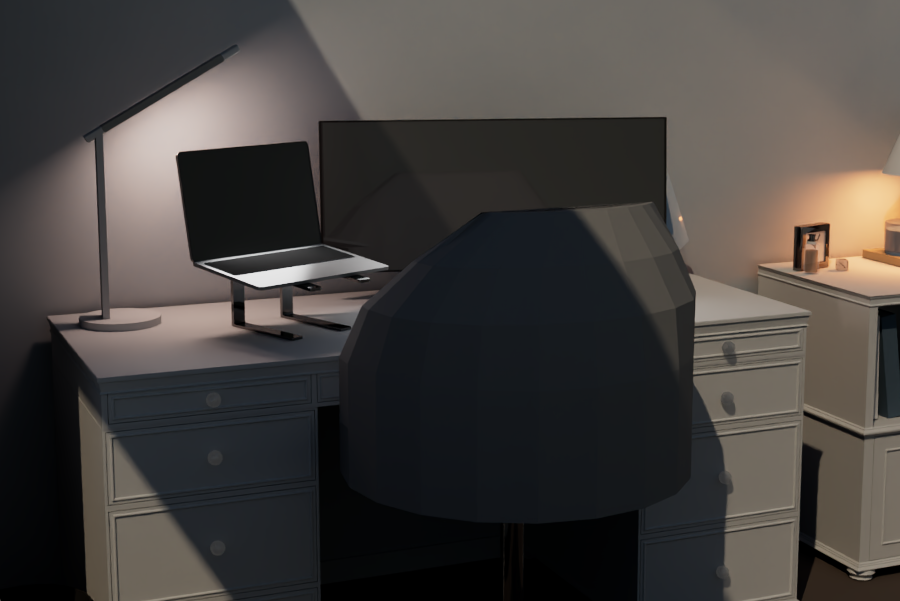
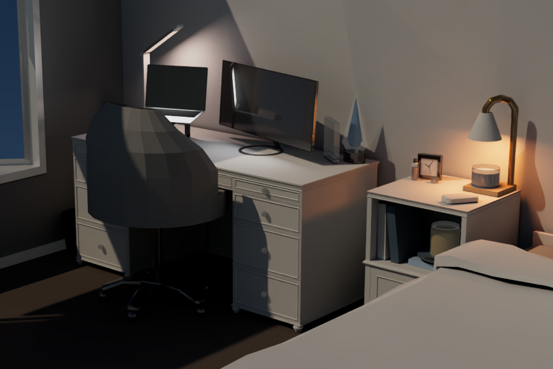
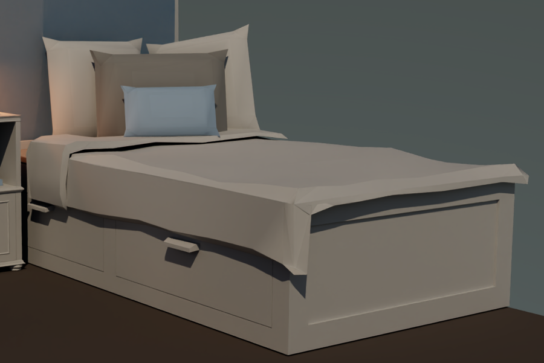

A Maya Exploration
To start learning Maya, I decided to model my own room. Before this, I had no experience with Maya or any other modeling software.
The first step of this project was building furniture. I learned how to build complicated pieces from basic poly models. After creating the pieces, I added color to each one to make them look realistic.

Wide view, before lighting

Left angle, before lighting
After creating and coloring all the pieces, I added different lighting to simulate the lights in my room. This included a skylight outside the window, a candle warmer lamp on the nightstand, a desk lamp, and lights on the computer and monitor.

Desk, lit

Nightstand, lit

Left angle

Top-down angle

Desk

Desk and nightstand

Bed
I think this was a really useful project for my initial exploration into modeling. By modeling my room while I was at home, I was able to inspect the elements I was modeling in real life as I was creating them.